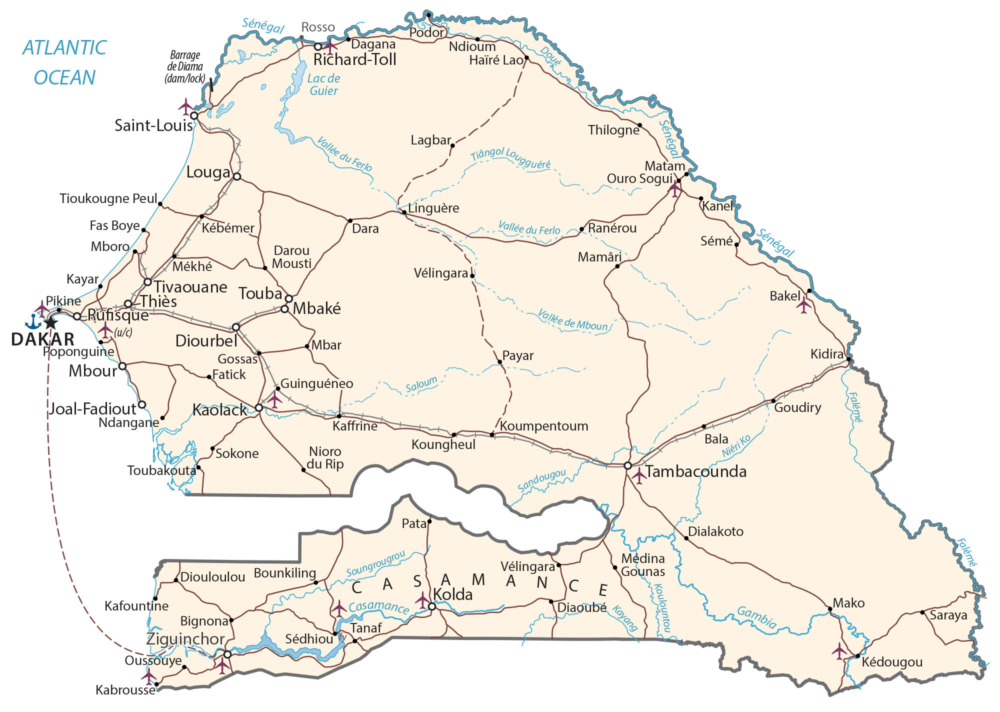

Senegal is the westernmost country in mainland Africa. It’s situated beside the Atlantic Ocean on the west coast. Senegal borders Mauritania to the north, Mali to the east, Guinea to the southeast, and Guinea-Bissau to the southwest.
It completely surrounds the country of The Gambia, which is basically a 20 to 30-mile buffer along the Gambia River. Senegal also shares a maritime border with Cape Verde, which is about 600 kilometers (373 mi) off the west coast of Senegal, Africa. Dakar is the capital and largest city of Senegal.
Go back home